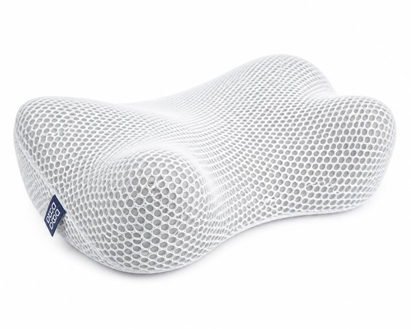
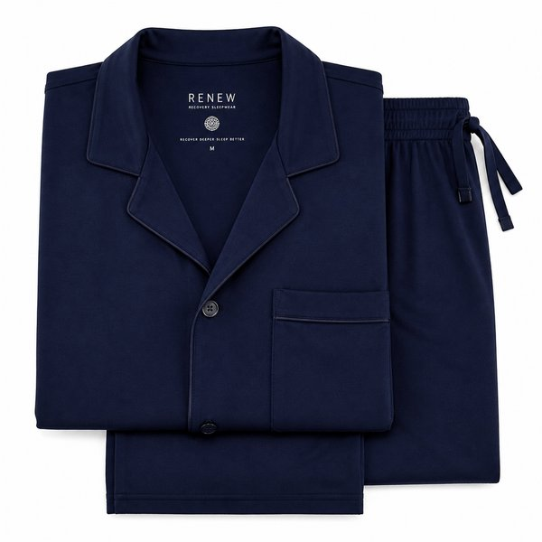
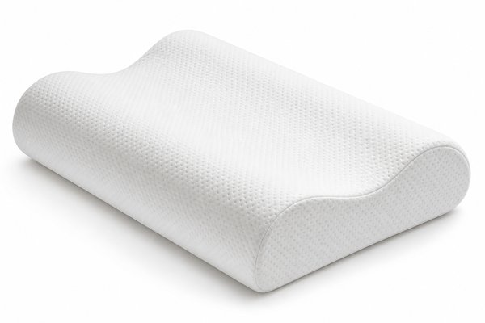
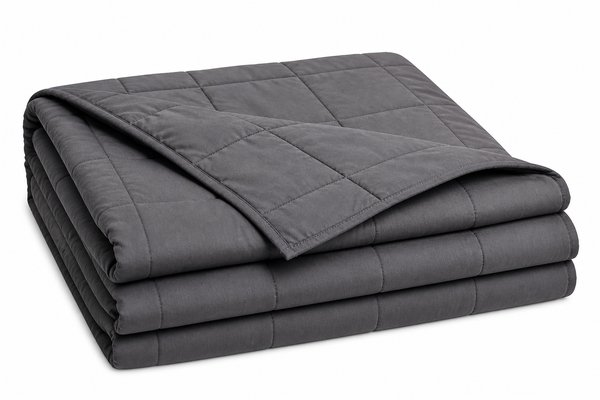
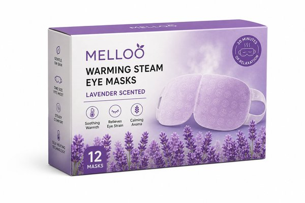
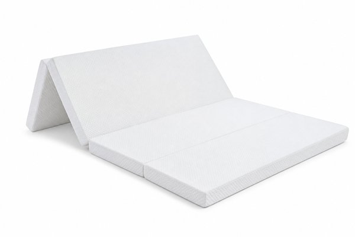
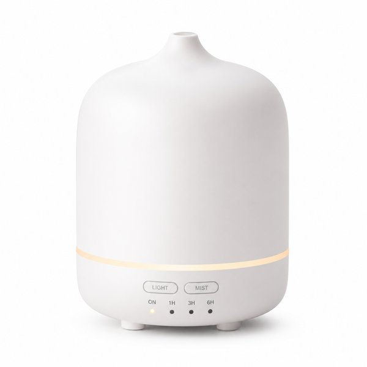
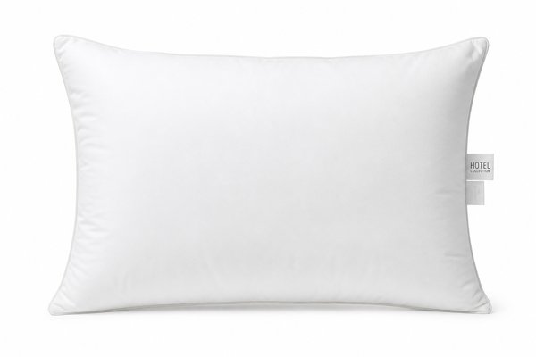
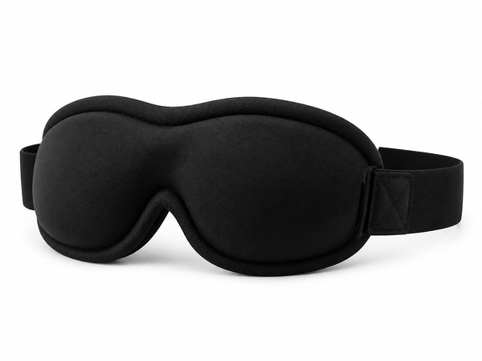
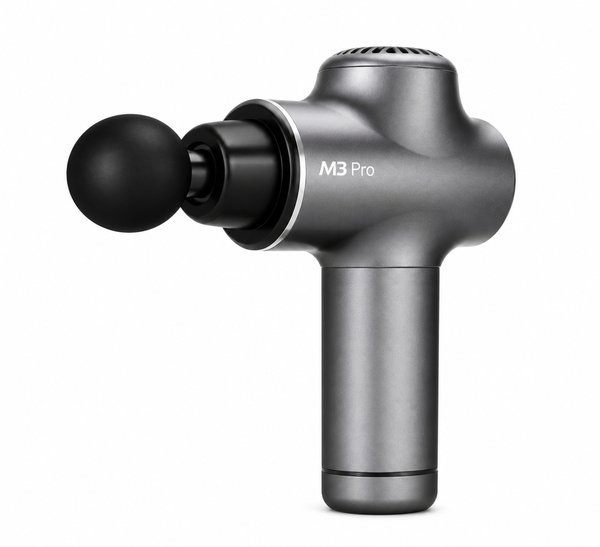

【2026年最新】朝の目覚めが劇的に変わる！睡眠の質（QOL）を最大化するおすすめ安眠グッズ10選
「朝起きても体が重だるい」「夜中に何度も目が覚めてしまう」「肩や首のこりが取れない」——そんな睡眠の悩みを抱えていませんか？
人生の3分の1を占める睡眠時間。寝具や寝室環境を整えることは、日中の集中力やメンタルの安定、仕事のパフォーマンスを劇的に高めるもっとも費用対効果の高い自己投資です。
本記事では、睡眠改善に徹底的にこだわり抜いた編集部が実際に使って「翌朝の目覚めが別次元になった！」と確信した、睡眠の質（QOL）を最大化するおすすめ安眠グッズ10選をご紹介します。
- おすすめ10選 スペック・特徴比較表
- BEST 1｜ブレインスリープ ピロー STANDARD 高反発通気性まくら
- BEST 2｜BAKUNE リカバリーウェア 上下セット 特殊機能繊維SELFLAME
- BEST 3｜オリジナルネックピロー Mサイズ 低反発波形まくら
- BEST 4｜加重ブランケット 重い毛布 6kg 抗菌防臭リバーシブル
- BEST 5｜めぐりズム 蒸気でホットアイマスク ラベンダーの香り 12枚入
- BEST 6｜エアリーマットレス HG90-S シングル 厚さ9cm 高反発ハイグレード
- BEST 7｜超音波アロマディフューザー 大容量型 間接照明LED付き
- BEST 8｜ホテルスタイル枕 プレミアム スタンダードサイズ
- BEST 9｜3D立体型 睡眠用アイマスク 遮光率100% 圧迫感ゼロ
- BEST 10｜リカバリーガン RG-01 小型軽量 筋膜リリース
- 🎁【読者限定】完全無料で試せる人気サービス
- まとめ：生活をラクにする最初の一歩
| 順位 | 商品名 | ブランド | 最大の特徴・おすすめ理由 | 総合評価 |
|---|---|---|---|---|
| BEST 1 | ブレインスリープ ピロー STANDARD 高反発通気性まくら | BRAIN SLEEP（ブレインスリープ） | 抜群の放熱性で頭が蒸れず朝まで涼しくぐっすり熟睡できる | 4.9 ★ |
| BEST 2 | BAKUNE リカバリーウェア 上下セット 特殊機能繊維SELFLAME | TENTIAL（テンシャル） | 特殊鉱石繊維の遠赤外線効果でじんわり温まり血行を促進 | 4.9 ★ |
| BEST 3 | オリジナルネックピロー Mサイズ 低反発波形まくら | TEMPUR（テンピュール） | NASA認定の独自素材が体圧を均等に分散し首の負担を極小化 | 4.8 ★ |
| BEST 4 | 加重ブランケット 重い毛布 6kg 抗菌防臭リバーシブル | ハグラビ（HUG LABI） | 心地よい重みが副交感神経を優位にして不眠や不安感を和らげる | 4.8 ★ |
| BEST 5 | めぐりズム 蒸気でホットアイマスク ラベンダーの香り 12枚入 | 花王（Kao） | 開封するだけで温まり飛行機や新幹線でも手軽に使える | 4.9 ★ |
| BEST 6 | エアリーマットレス HG90-S シングル 厚さ9cm 高反発ハイグレード | アイリスオーヤマ | 適度な反発力で理想の寝姿勢を維持し腰痛持ちの方に高評価 | 4.8 ★ |
| BEST 7 | 超音波アロマディフューザー 大容量型 間接照明LED付き | 無印良品 | 熱を使わない超音波式でアロマ本来のフレッシュな香りが広がる | 4.8 ★ |
| BEST 8 | ホテルスタイル枕 プレミアム スタンダードサイズ | ニトリ（NITORI） | 高級ホテルのスイートルームのような極上のふかふか触感 | 4.7 ★ |
| BEST 9 | 3D立体型 睡眠用アイマスク 遮光率100% 圧迫感ゼロ | Bebemall | 3Dドーム構造でアイメイクをしたままでも崩れず目元が超快適 | 4.8 ★ |
| BEST 10 | リカバリーガン RG-01 小型軽量 筋膜リリース | DOCTOR AIR（ドクターエア） | 手の届きにくい肩甲骨周りやふくらはぎを力を使わずにほぐせる | 4.8 ★ |
ブレインスリープ ピロー STANDARD 高反発通気性まくら

「スタンフォード式 最高の睡眠」から生まれた超通気性まくら。90%以上が空気の特許素材で頭の熱を逃がし、入眠直後の黄金の90分で深い眠りを実現。シャワーで丸洗いできダニやカビの心配もゼロです。
- 抜群の放熱性で頭が蒸れず朝まで涼しくぐっすり熟睡できる
- 7日間使えば自分の頭の形に自然とフィットする特殊グラデーション構造
- シャワーの水洗いでいつでも清潔、アレルギー持ちにも最適
- 一般的な枕に比べて価格がプレミアム
BAKUNE リカバリーウェア 上下セット 特殊機能繊維SELFLAME

自らの体温を輻射して遠赤外線効果で血行を促進し、寝ている間に筋肉のコリをほぐす話題のリカバリーパジャマ。寝返りを妨げない立体裁断と上質な肌触りで、翌朝の体の軽さに驚かされます。
- 特殊鉱石繊維の遠赤外線効果でじんわり温まり血行を促進
- 肩や腕が突っ張らない特殊パターンで寝返りが驚くほどスムーズ
- 吸湿速乾性に優れ寝汗をかいてもサラサラ感が持続
- 洗濯時はネット使用が推奨される
オリジナルネックピロー Mサイズ 低反発波形まくら

世界中のホテルで採用される低反発まくらの最高峰。波型の独特なフォルムが頭部から首筋に沿ってぴったり密着し、頸椎を理想的なカーブでサポート。朝起きたときの首や肩の違和感をスッキリ解消します。
- NASA認定の独自素材が体圧を均等に分散し首の負担を極小化
- 仰向けでも横向きでも首がしっかりと支えられる波型デザイン
- 耐久性が高くへたりにくいため長年愛用できる
- 冬場の室温が低いときは素材がやや硬めに感じることがある
加重ブランケット 重い毛布 6kg 抗菌防臭リバーシブル

適度な重み（約6kg）が全身を優しく包み込み、まるで抱きしめられているかのような安心感を与えるウェイトブランケット。マイクロガラスビーズの均等な重みで寝返りによるバタつきを抑え、深いリラックスへ導きます。
- 心地よい重みが副交感神経を優位にして不眠や不安感を和らげる
- マイクロガラスビーズが偏らず体に吸い付くようにフィット
- 夏はひんやり、冬は暖かいリバーシブルカバー付き
- 6kgの重さがあるため干したり持ち運ぶ際に少し力が必要
めぐりズム 蒸気でホットアイマスク ラベンダーの香り 12枚入

約40℃の心地よい蒸気が目元を温かく包み込み、PCやスマホで酷使した目の奥の緊張をほぐす使い捨て温熱アイマスク。ほのかなラベンダーの香りで気分までほぐれ、ベッドに入って数分で自然な眠りに落ちます。
- 開封するだけで温まり飛行機や新幹線でも手軽に使える
- たっぷりの温かい蒸気が約20分持続して眼精疲労を集中ケア
- 耳かけ付きでどんな姿勢でもズレずにリラックス
- 使い捨てタイプのため毎晩使うとランニングコストがかかる
エアリーマットレス HG90-S シングル 厚さ9cm 高反発ハイグレード

新素材「エアロキューブ」を採用した高反発3つ折りマットレス。優れたクッション性で腰の沈み込みを防ぎ、寝返りのエネルギーを約半分に軽減。通気性抜群で夏は涼しく、中材まで水洗い可能で清潔です。
- 適度な反発力で理想の寝姿勢を維持し腰痛持ちの方に高評価
- 中材の繊維チューブまでお風呂場でシャワー丸洗いできる
- 三つ折りできて自立するため部屋の省スペース化に最適
- 冬場は冷気を通しやすいため敷きパッドの併用がおすすめ
超音波アロマディフューザー 大容量型 間接照明LED付き

超音波によるきめ細かなミストでエッセンシャルオイルの香りを部屋いっぱいに広げる大人気ディフューザー。2段階の温かいオレンジ色LEDライトが就寝前の間接照明として優しく、入眠儀式に最適です。
- 熱を使わない超音波式でアロマ本来のフレッシュな香りが広がる
- タイマー機能付きでベッドに入ったまま自動オフできる
- 温かみのある間接照明として寝室の雰囲気がグッとおしゃれに
- 定期的なタンク内部のお手入れ（水垢清掃）が必要
ホテルスタイル枕 プレミアム スタンダードサイズ

一流ホテルの枕のようなふんわりと包み込まれる柔らかさを再現した大ベストセラー。マイクロファイバーわたを贅沢に使用し、頭をやさしく沈み込ませてリラックス。丸洗いできてリーズナブルな点も魅力です。
- 高級ホテルのスイートルームのような極上のふかふか触感
- 洗濯機で丸洗い可能でいつでも清潔をキープ
- アンダー3,000円台という驚異的なお値段以上のコスパ
- 柔らかめが好きな人向けで、硬い枕を好む人には不向き
3D立体型 睡眠用アイマスク 遮光率100% 圧迫感ゼロ

目元部分がドーム状に窪んだ3D立体設計で、瞬きをしてもまつ毛が当たらず眼球への圧迫感がゼロの安眠アイマスク。鼻周りの独自の隙間防止設計により、朝の朝日や夜勤明けの昼間でも完全な漆黒の闇を作れます。
- 3Dドーム構造でアイメイクをしたままでも崩れず目元が超快適
- 鼻の隙間からの光漏れを完全に遮断する100%遮光性能
- 調整可能なマジックテープバンドで耳が痛くならない
- 寝相が激しいと朝起きたときに外れていることがある
リカバリーガン RG-01 小型軽量 筋膜リリース

片手で持てる約620gのコンパクトサイズながら、毎分最大約3,500回の強力振動で肩・腰・脚のコリをピンポイントでほぐすマッサージガン。就寝前の5分間当てるだけで血流が良くなり、全身の脱力感を誘います。
- 手の届きにくい肩甲骨周りやふくらはぎを力を使わずにほぐせる
- 4種類のアタッチメント付きで部位に合わせたケアが可能
- USB充電式のコードレスでベッドサイドでもソファでも使える
- 骨の真上など強い刺激を避けるべき部位への使用はNG
日々の暮らしや買い物を楽しむなら、人気雑誌1,000誌以上がスマホやタブレットで読み放題の「楽天マガジン」が圧倒的におすすめです！初回31日間は完全無料で、無料期間中に解約すれば料金は1円もかかりません。
＼ 読者負担0円！雑誌1,000誌読み放題 ／楽天マガジン 31日間無料お試しを詳しく見る →
💡 まとめ：生活をラクにする最初の一歩
質の高い睡眠は、健康で活力ある毎日の土台です。抜群の通気性で頭を冷やす「ブレインスリープ」や、着るだけで血行を促す「BAKUNE」など、科学的アプローチで作られた安眠グッズは使ったその日から違いを実感できます。今夜から極上の睡眠環境を手に入れて、すっきり爽快な朝を迎えてみませんか。
楽天市場では「5と0のつく日」や「お買い物マラソン」などのキャンペーンに合わせて購入すると、ポイント還元が最大化してお得に手に入ります。ぜひチェックしてみてくださいね。